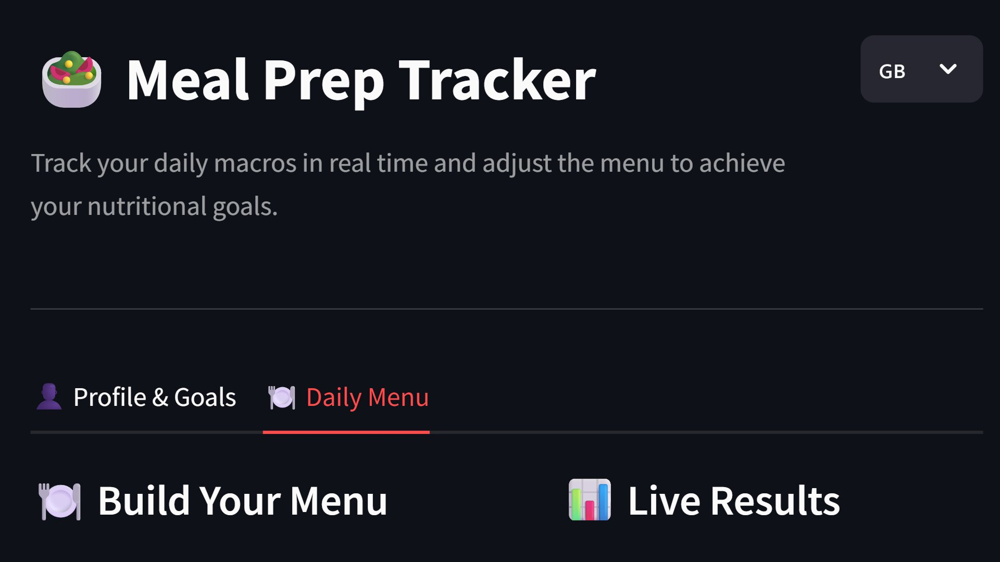

Projects
Data Science Internship: "Machine Learning and Sound Simulations by Physical Models to help the Design of Musical Instruments"
Joint project by the Laboratoire des Sciences du Numérique de Nantes and Yamaha Corporation, modeling acoustic–geometric relationships in brass instruments using physics-based simulations and machine learning.

HomeFlix: A Movie Recommendation System
Full-stack movie recommendation system built with FastAPI, Streamlit, and DuckDB using real TMDB and Kaggle datasets. Implements collaborative filtering via SVD matrix factorization to generate personalized predictions. Deployed using a Docker Compose microservices architecture.
Source Code
Macro Tracker
Streamlit web app for personalized nutrition tracking. User provides biometric data and weight targets to compute caloric needs via Mifflin-St Jeor, macros are distributed following a standard breakdown. Features real-time Plotly visualization and trilingual support through a modular i18n architecture backed by a pandas data pipeline.
Live Demo Source Code